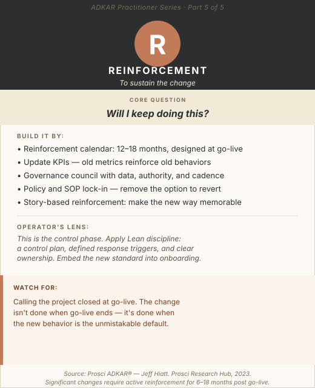

The project is closed. The steering committee meeting has moved from weekly to never. The change management resources have rolled off to the next initiative. Go-live happened, training is complete, adoption looks passable.
Fourteen months later, someone in operations realizes that two-thirds of the team is running a hybrid of the old and new process. There are undocumented workarounds everywhere. The efficiency gains projected by the business case haven't materialized. A new improvement initiative is being scoped to address the same problem the previous one was supposed to solve.
This is not a failure mode. This is the default outcome when Reinforcement is treated as optional.
The human brain is wired for habit. The neural pathways built through years of doing something a particular way are deeper and more durable than any training program you run. Without active, sustained reinforcement of the new behavior, those old pathways reassert themselves — not out of defiance, but out of neuroscience. Reversion isn't resistance. It's physics. And it requires architectural countermeasures, not better intentions.
Foundation
What Reinforcement Actually Is
Reinforcement is the fifth and final building block in the ADKAR model, and the one most frequently treated as optional or deferred until "after the stabilization period." That framing misunderstands its function.
Reinforcement is not a phase that comes after the change is done. It is what determines whether the change is actually done. It encompasses all the structural, cultural, and operational mechanisms that make the new behavior the expected, measured, recognized, and most-natural-path-of-least-resistance default.
Prosci identifies two core Reinforcement functions: preventing regression (stopping the drift back to old behaviors) and sustaining the new capability (continuing to build on the change rather than just defending it). Both require active design. Both require ongoing investment — not indefinitely, but for significantly longer than most change programs budget for.
The benchmark from practitioner guidance: significant behavioral changes require active Reinforcement for six to eighteen months post-go-live before they are stable enough to sustain without dedicated program support. Most change programs plan for six to eight weeks.

ADKAR Practitioner Series — Part 5: Reinforcement. The phase that determines whether the work was worth doing.
Diagnosis
How to Confirm a Reinforcement Barrier Point
Reinforcement problems present differently from earlier barrier points because they are temporal — they show up weeks or months after go-live, often after the change team has demobilized and the problem has been reclassified as "business as usual performance management."
Reinforcement Gap Signals
- Adoption metrics that improved post-go-live are now declining
- Employees who were performing in the new state are reverting to old behaviors
- Workarounds that were eliminated are reappearing in modified forms
- New hires aren't receiving the new-state as their baseline — they're being onboarded into the hybrid
- The new process is not reflected in updated SOPs, performance reviews, or reporting dashboards
- Leadership behavior — in meetings, decisions, and what they reward — has drifted back toward old patterns
A useful diagnostic: take an ADKAR assessment of the same population you assessed at go-live. If Desire scores have dropped (people have stopped wanting to maintain the change) or Ability scores have declined (people have lost proficiency without use), you have Reinforcement-specific regression. If Awareness scores have dropped — particularly among new hires or transfers — you have a Reinforcement gap in the onboarding system.
Program Design
Eight Blueprints for Sustaining Change
The Reinforcement Calendar — Design It Before Go-Live
The single most important Reinforcement tool is also the simplest: a pre-planned calendar of activities that begins at go-live and runs for 12–18 months. A Reinforcement calendar typically includes:
- Monthly metrics reviews — adoption rates, process compliance, performance on key new-state indicators.
- Quarterly ADKAR pulse checks — identify regression by population before it becomes entrenched.
- Story collection cycles — a monthly ask to managers: "Tell us one story of the new process working well or one challenge your team faced this week."
- Recognition events at defined milestones — 30-day adoption, 90-day proficiency, 6-month sustained performance.
- Refresher communications at 60 and 90 days, particularly for populations that had early challenges.
- Community of practice sessions at quarterly cadence to sustain shared ownership.
The calendar makes Reinforcement a designed operating rhythm rather than a reactive measure. Building it before go-live signals to stakeholders that the change team understands the work doesn't end at launch — and gives managers a clear expectation of what sustained support looks like.
Update the Metrics — or Reinforce the Old Behaviors
This is one of the most structurally powerful Reinforcement tools, and one of the most frequently missed: update every performance metric, dashboard, and scorecard that touches the changed process to reflect the new-state success indicators.
Old metrics don't just fail to reinforce the new behavior — they actively reinforce the old one. If a team's performance dashboard still shows their efficiency metric using the old process baseline, the implicit signal is that the old process is still what matters. People follow what gets measured.
New-state metric design: replace lagging measures that reflected old-process performance with measures targeting new-state outcomes; make adoption rates (process compliance, template adherence, system utilization) explicitly visible for at least the first 90 days; ensure leadership scorecards reflect new-state performance indicators so the change remains visible at the level where resource decisions are made.
Governance Councils — The Structural Anchor for Sustained Change
A governance council is a cross-functional forum that meets regularly to review performance data, address cross-domain issues, celebrate progress, and sponsor continuous improvement on the new process. It is the organizational structure that ensures the change has ongoing ownership rather than drifting into nobody's accountability.
Governance council design:
- Composition: Representatives from all major affected functions, people manager level or above, with clear senior leadership sponsorship.
- Cadence: Monthly in the first year, quarterly thereafter as the change stabilizes.
- Agenda: Process compliance metrics review, barrier identification, success story sharing, decision-making on unresolved issues, and continuous improvement opportunities.
- Authority: The council must have the ability to make decisions — resource allocations, process adjustments, escalations. A council with no decision rights is a meeting, not a governance mechanism.
In process excellence contexts, this council also serves as the mechanism for continuous improvement — building on the change rather than just defending it. Over time, it evolves from a change reinforcement forum to a standard operating rhythm for managing the improved process.
Story-Based Reinforcement — The Narrative That Makes the Change Real
Metrics demonstrate that the change is working. Stories make people believe it. Both are necessary.
Active story collection is a discipline: designate someone — often the change lead, a communications role, or a champion network coordinator — to regularly solicit stories from managers and champions. When did the new process prevent a problem? Who handled an exception well this month? What used to take 30 minutes that now takes 10?
These stories are then shared in leadership communications (town halls, newsletters, manager updates), governance council meetings (opening each meeting with a story sets the tone), and team meetings where managers use them to normalize and celebrate the new way.
Stories work as reinforcement because they are specific, memorable, and relatable in a way that metrics are not. A team that hears "Maria in Chicago handled a supplier exception entirely through the new portal last week and resolved it in four hours instead of the two days it used to take" will internalize the value of the new process in a way that a compliance rate dashboard never achieves.
Policy and SOP Lock-In — Remove the Option to Revert
Human discipline degrades over time. Reinforcement that depends entirely on individual discipline and goodwill degrades with it. The most durable reinforcement is structural: removing the mechanisms that make it easy to revert.
- Updated SOPs and process documentation that reflect only the new process — and archive or remove old documentation so it's not available as a reference.
- System-enforced standards where the technology supports them: mandatory fields, workflow configurations that route approvals through the new path, automated compliance checks.
- Policy updates that reference the new process standards and make the old approach non-compliant.
- Template enforcement in documentation systems, report templates, and communication tools that embed the new standards into the default workflow.
In Lean terms, this is mistake-proofing the change — designing the environment so that the correct behavior is the path of least resistance, and the old behavior requires active circumvention.
Integrate Change into Performance Management
One of the clearest signals an organization can send that a change is permanent is integrating it into the performance management cycle.
For individual contributors: include adherence to the new process as an explicit expectation in performance reviews during the first full review cycle after go-live.
For people managers: hold managers accountable for their team's adoption rates and for executing the coaching plan designed during the Ability phase. A manager who is not coaching their team through the adoption curve should not receive a favorable performance assessment in the change management competency.
For senior leaders: include change program outcomes — adoption rates, business case realization, team readiness for the next initiative — in the evaluation of leaders who sponsored the change. This closes the accountability loop at the top.
Performance management integration is a strong signal. And its absence is an equally strong one. Employees accurately read "this didn't make it into the annual review" as "it probably doesn't really matter."
The 30-60-90 Day Audit Cadence
Don't wait for performance problems to confirm the change is sticking. Run structured audits at 30, 60, and 90 days post-go-live. Each audit is a diagnostic tool — outputs drive targeted interventions, not general communications.
30-Day Audit
Focus: Are people using the new process? Where are workarounds appearing?
Format: Observation-based (watch real transactions or processes), supplemented by manager interviews.
Output: A prioritized list of Ability barriers to address and communication gaps to close.
60-Day Audit
Focus: Is adoption improving? Are the barriers identified at 30 days resolved?
Format: ADKAR pulse survey + performance data review.
Output: Reinforcement calendar adjustments, targeted support for lagging populations.
90-Day Audit
Focus: Is the new process the default? Are there specific teams or individuals still struggling?
Format: Performance dashboard review + representative sample observations.
Output: Transition of intensive support to steady-state governance; escalation of persistent outliers to people management.
Process Mining and Analytics for Compliance
For organizations with the data infrastructure, process mining tools provide an objective, continuous view of whether the new process is being executed as designed — in a way that observation-based audits cannot match in scale or frequency.
Process mining (tools like Celonis, Signavio, UiPath Process Mining, or well-designed Power BI event log analysis) reconstructs actual process execution paths from system event logs. Applied to a changed process, it can:
- Show the exact proportion of transactions following the new process versus old paths or workarounds.
- Identify specific steps where variance is highest — the exact points where people are deviating.
- Track compliance trends over time — revealing whether adoption is improving, plateauing, or regressing.
- Segment compliance by team, location, or individual when the data volume supports it.
This data transforms governance council meetings from anecdote-based conversations to evidence-based decision-making. When the council asks "how are we doing?", the process mining dashboard gives a precise answer — and points directly at where Reinforcement investment should be concentrated.
The Operator's Lens
This is the control phase — treat it like one. In Lean Six Sigma, the DMAIC process doesn't end at Improve. Define, Measure, Analyze, Improve, Control — the control phase is where process gains are locked in and protected. Reinforcement is the change management control phase. Apply the same rigor: a control plan, defined response triggers ("if compliance drops below X%, the following actions are taken"), regular measurement, and clear ownership. The Lean practitioner who skips the control phase expects to repeat the improvement cycle in 18 months. The change manager who skips Reinforcement gets the same result.
Turnover erodes change without intentional onboarding design. Every new employee who joins after go-live and is not onboarded into the new standard is a reinforcement gap. Operational environments with meaningful turnover need to treat the "new-state as baseline" integration of their onboarding program as a Reinforcement requirement. The standard operating procedures, training modules, and job aids for new hires must reflect the new process, not the legacy one. This seems obvious. It is routinely missed.
Leadership behavior is the most powerful reinforcement signal available — and it costs nothing. When senior leaders use the old terminology in meetings, tolerate the old process when they observe it, fail to reference the new process metrics in their reviews, or quietly let compliance slide for their direct reports, the workforce accurately interprets the signal: the change is optional. Conversely, when leaders visibly and specifically reference the new process, recognize teams who execute it well, and hold their direct reports accountable to the standard — adoption rates follow. No governance council, no dashboard, no incentive program is as efficient as consistent visible leadership behavior.
Common Traps
Mistakes to Avoid
Closing the project at go-live.
This is the most costly single mistake in change management. The change is not done at go-live. It is done when the new behavior is the unmistakable default — measured, recognized, and structurally supported. That takes months, not weeks.
Leaving old metrics and dashboards in place.
Old metrics reinforce old behaviors. Update them, or accept the mixed signal.
Skipping governance because "it should maintain itself."
It won't. Process gains without governance erode. Build the council, define its authority, and give it the data it needs to lead.
Forgetting onboarding.
The change was communicated to the existing workforce. New joiners receive neither the communication nor the rationale. Without intentional design, they receive the hybrid — and become vectors for reversion within their teams.
The Awareness campaign, the Desire work, the learning architecture, the performance support infrastructure — all of it lands, or doesn't, based on whether the organization is willing to do the unglamorous work of sustaining what was built. Build the governance. Update the metrics. Tell the stories. Lock in the policies. Then six months from now, go-live will look like the beginning — because it was.
Sources: Prosci ADKAR® Research Hub. Prosci Reinforcement guidance. Prosci Best Practices in Change Management, 2023. VisualSP change management practitioner research. Sources of Insight: ADKAR application guides. Process mining: Celonis, Signavio practitioner documentation.